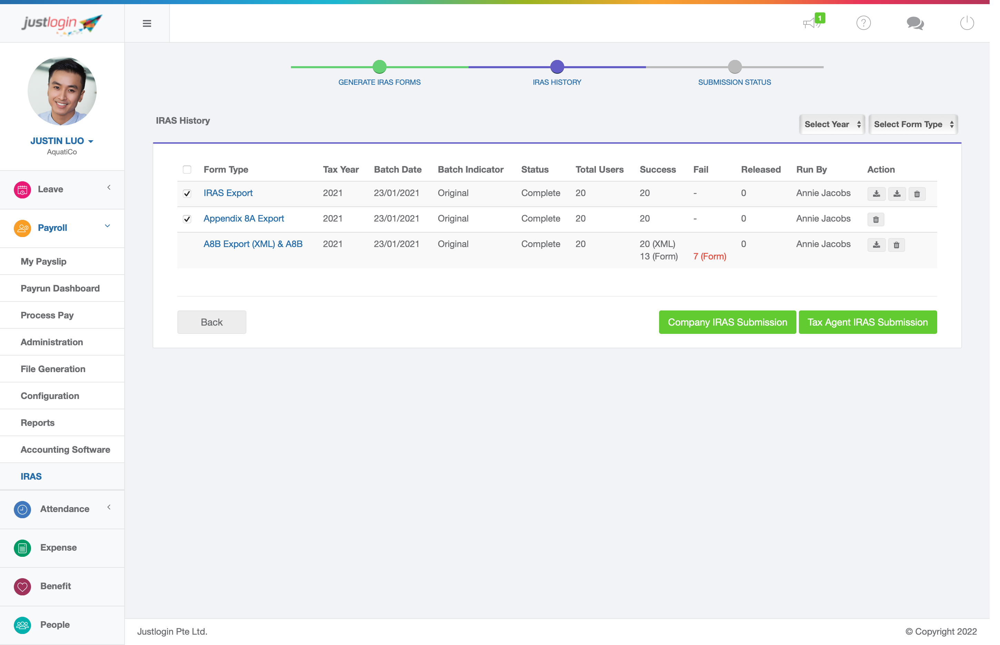
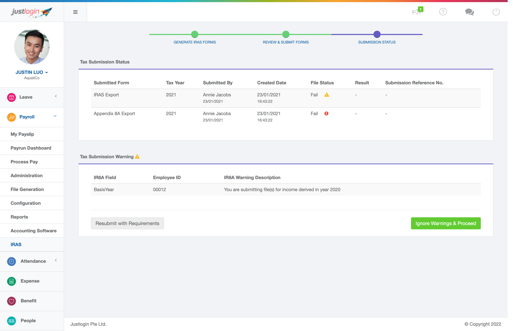

Output
All 3 steps, shipped to production
Each screen was designed and built to handle real user scenarios — including validation errors, multi-row data tables, and complex form logic — all within JustLogin's Express design system.

Step 1 — Generate IRAS Forms
3-column form with submission config, employee selection table, and pagination. Users
select employees and configure form type before generating.

Step 2 — Review & Submit
Filterable history table showing batch status, success/fail counts, and per-row
actions. Users verify generated forms before submitting to IRAS.

Step 3 — Submission Status
Results dashboard with status indicators, warning descriptions, and two clear action
paths — resubmit with corrections or proceed despite warnings.